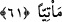
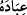

60. Ancak tevbe eden, inanıp iyi iş yapanlar müstesnâ. Onlar cennete girecekler
ve hiç haksızlığa uğratılmayacaklardır.
“Ancak tevbe eden” şirk ve isyanlardan dönenler “inanıp” küfür yerine imanı seçen,
tevbe ve pişmanlıktan sonra da “iyi iş yapanlar müstesnâ. Onlar” Allâh’ın kesin vaadi
gereği “cennete girecekler ve hiç haksızlığa uğratılmayacaklardır.” Yaptıkları iyi
amellerin
karşılığından
hiçbir
şey
noksanlaştırılmayacak
ve
ondan
engellenmeyeceklerdir. Âyette geçen “zulüm” kelimesi aslında noksanlık ve engelleme
anlamınadır.
61. Rahman’ın kullarına, gıyâben vaad ettiği Adn cennetleri(ne gireceklerdir.)
şüphesiz O’nun vaadi yerine gelecektir.
“Rahman’ın kullarına, gıyâben vaad ettiği Adn cennetlerine” gireceklerdir. ‘Adn
cennetleri’, ‘Ramazan ayı’ ifâdesinde olduğu gibi belli bir cennetin özel adıdır. Bazen
‘ay’ kelimesi hazfedilerek “Ramazan geldi.” diye de söylenir. ‘Adn cennetleri’
ifâdesinin sevâb yurdunun (cennetin) hepsinin özel adı olduğu da söylenmiştir. Çünkü ‘ __WORD__’ , ikâmet etmek demek olup böyle bir makâma daha uygundur. Çünkü hususi Adn
cennetine ve Firdevs cennetine avam asıl olarak giremez. Çünkü bu iki cennet
mukarrebûnun makâmıdır.
Cennetlerin ‘gıyâben’ vaad edilmiştir, çünkü cennetler hazırda olmayıp onlardan
gâibdir. Ya da onlar cennetlerden gâibdirler, onları görmezler, sırf Allâh’ın haber
vermesiyle onlara inanırlar.
Âyette “__WORD__” isminin kullanılması, Allâh’ın o cennetleri vaadinin ve onu yerine
getirmesinin rahmetinin genişliği sebebiyle olduğunu bildirmek içindir. “ __WORD__ (kullarına)” şeklinde kulların Allâh’a izâfe edilmesinde kasdedilenin dünya, nefis ve
hevâya tapanlar değil, ihlâsla Allâh’a ibâdet eden kimseler olduğuna işâret vardır.
Çünkü izâfet yoluyla şereflendirme, ancak bu anlamda meydana gelir. Böyle bir kul için
özel Adn cenneti vardır.
“Şüphesiz O’nun” Allah Teâlâ’nın “vaadi” O’nun vaad ettiği cennet “yerine
gelecektir.” Yâni kendisine vaad edilen kimseye, vaadden dönülmeksizin mutlaka
gelecektir.